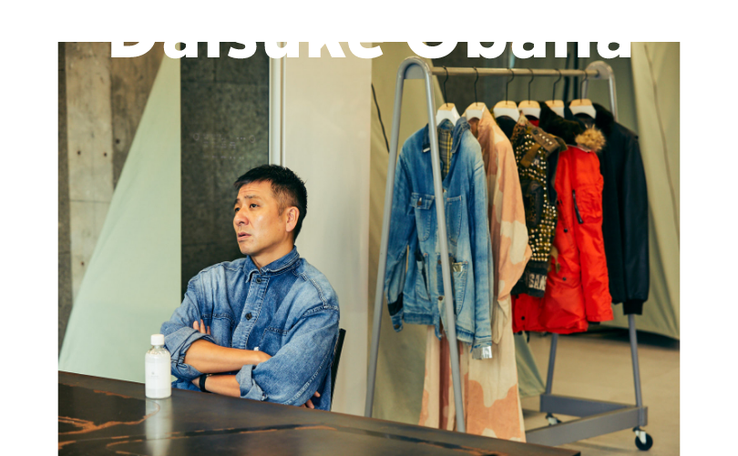
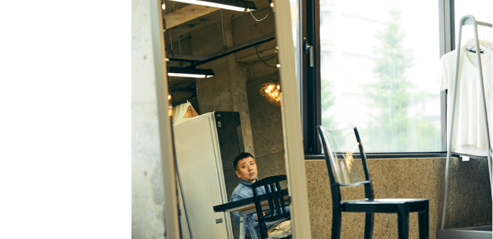
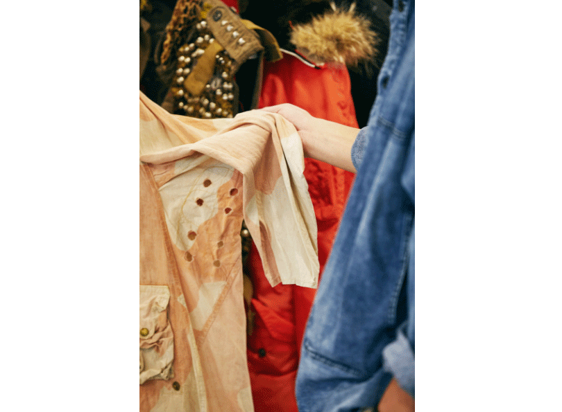

2022.06.04
2010年からNYにてコレクションを発表し続け、モードの帝王、カール・ラガーフェルドも一目置くN.HOOLYWOODのデザイナー、尾花大輔氏。近年ではディレクターとして数々のプロジェクトにも参画。聖火ランナーのユニフォームのデザイン監修をされたことでもよく知られています。そんな彼の原点が古着であることは、これまで数多のメディアでも語られてきました。その深部について触れていきます。

古着のイロハを吸収しまくった10代
世界からも注目を集めるブランドは、今年で22年目に突入。今や自身のブランド以外のクリエイティブにも携わるなど多忙を極める中、限られた時間の中でインタビューは始まった。改めてファッションへの目覚めについて話題を向けると、はにかみとも取れる笑みを浮かべながらいつもの丁寧な口調で語り出した。

「ファッションを意識し出したのは中学生のころでしょうか。中学生ですから、もちろんお金はない。けれども、格好はつけたい。それで洋服が安く手に入る古着屋に行くようになったんです。僕は神奈川で生まれ育ったんですが、当時は軍の払い下げ屋みたいな場所や古着屋がたくさんあったんですよね。中でも『VACATION』というマニアが集まる名店によく足をを運び、後にスタッフとしてアルバイトさせて頂きました」
そして気付けばヴィンテージウエアの虜に。ジーンズやミリタリーウエアなどのマニアックな知識をどんどん吸収していった。ただ当初は、ファッション業界で働こうとは夢にも思っていなかったというから面白い。
そして気付けばヴィンテージウエアの虜に。ジーンズやミリタリーウエアなどのマニアックな知識をどんどん吸収していった。ただ当初は、ファッション業界で働こうとは夢にも思っていなかったというから面白い。
「当時は、車関係の仕事に就きたいと思っていたのですが、なかなか思うように進学することができなくてね（笑）。となればやはりファッションなのかなということで、都内の『VOICE』という古着屋で働き始めたんです。３年ほど経験を積めばバイイングにも関わらせてもらえるかなーとぼんやり考えていたんですが、ひょんなことから入店して２ヶ月で僕がバイヤーとしてアメリカへ行かせてもらうことに。そんなこともあるんだと驚きましたよね」
夢に思い描いていたアメリカでの古着のバイイングを、入店して2ヶ月、19歳で叶えてしまった尾花氏。とはいえその背景には、積み重ねてきた知識と行動力があったことは間違いない。
「高校時代から濃厚な古着マニアの人たちから様々な情報を教えてもらいましたし、（VACATION時代のお客様）、『VOICE』では異例の売り上げもあげました。あのお客さん、あれ好きだよな〜と思ったら電話してあげたり。お客さんの趣味嗜好をリスト化してましたね。今じゃそんなの当たり前ですけど、昔は来店するまで待つのが普通。まあ、あと僕は口もうまかったですしね（笑）」。
「高校時代から濃厚な古着マニアの人たちから様々な情報を教えてもらいましたし、（VACATION時代のお客様）、『VOICE』では異例の売り上げもあげました。あのお客さん、あれ好きだよな〜と思ったら電話してあげたり。お客さんの趣味嗜好をリスト化してましたね。今じゃそんなの当たり前ですけど、昔は来店するまで待つのが普通。まあ、あと僕は口もうまかったですしね（笑）」。
古着の限界と未来を見た『go-getter』時代
『VOICE』で3年半ほどバイヤーを務めた後、今となっては伝説的古着屋として語り継がれる『go-getter』の立ち上げに参画。同店では、前職以上にアメリカへ買い付けに足を運んだという。
「その頃になると、もう指の感覚だけで古くて価値のあるものとそうでないものを判別できるようになっていました」。
しかし尾花氏は一着何十万もするようなヴィンテージウエアにはさほど興味を抱かなかったという。
「その頃になると、もう指の感覚だけで古くて価値のあるものとそうでないものを判別できるようになっていました」。
しかし尾花氏は一着何十万もするようなヴィンテージウエアにはさほど興味を抱かなかったという。
「当時の古着シーンは『いかに古くて貴重なアイテムか』に重きを置かれがちでしたが、僕はもっとファッション的であってほしかった。貴重なものを身につけるのが目的なのではなく、あくまでスタイリングを楽しんでもらいたかったんです。そういう意味で『go-getter』は古い価値観を変えていった古着屋だと思います」。
そして3年半後、尾花氏は『go-getter』から離れ『MISTER HOLLYWOOD』というショップをスタートさせる。
そして3年半後、尾花氏は『go-getter』から離れ『MISTER HOLLYWOOD』というショップをスタートさせる。
「古着はもちろん、古着をリメイクしたものも販売しましたし、完全にオリジナルのアイテムも作って販売していました。アメリカで仕入れてきた謎の雑貨なんかもあってもうグチャグチャ（笑）。お店の端に四畳半ぐらいの小さいギャラリースペースも作って、アメリカで知り合った無名作家の作品を展示販売もしていました。中には今、価格にゼロがふたつ付くほどに価値が高騰しているアーティストもいますよ」。
クリエイションと古着。双方に芽生えた変化
リメイクアイテムが飛ぶように売れていく一方、次なるステップの必要性も感じていた尾花氏はイチからモノを作る方へシフト。N.HOOLYWOODというブランドを完成させ東京コレクションに本格参加。さらにニューヨークコレクションに参加する世界的ブランドにまで押し上げた。
「N.HOOLYWOODで東京コレクションに参加するようになって9年ほど経った時に、どこか作業がルーティーン化してしまっているような感覚になったんです。それじゃあやっぱりつまらない。自分の好きな場所で、もっと自由にやりたいという思いが募って、ニューヨークでコレクションを発表することにしたんです」。
同地でやり続けていく中で、「時間とともに周りからも刺激を受けつつ、自然と自分の原点に戻っていくような感覚がありました」と尾花氏。と同時に、自身のルーツである古着との向き合い方も変わってきた。
同地でやり続けていく中で、「時間とともに周りからも刺激を受けつつ、自然と自分の原点に戻っていくような感覚がありました」と尾花氏。と同時に、自身のルーツである古着との向き合い方も変わってきた。
「年代とか、スペックとか、出自とか、そういったものにこだわりすぎず、もっと自由に古着に接することができるようになった感覚があります。飽きるどころか昔より買うのが楽しい（笑）。今日はそんな今の僕の価値観でいくつか古着を持ってきたのでいくつか紹介します」。
「これを手にしたのは５年ほど前。おそらく’60年代ぐらいのカバーオールで、製作したメーカーはもう現存してはいないでしょうね。どこかのフリマで買ったもので、あまりにもボロボロだったから自分でリメイクしました。このボロボロ具合は、あと2回ぐらい洗えばもうビリビリになるような気がしますよね。それこそ匂いなんかはファブリーズぐらいしかケアする手立てがない。そういう時こそLG Stylerのありがたみが分かります」。
「これは’40年代ぐらいの英国軍のデザート用オーバーコート。貴重さでいえば、もう博物館行きのレベルです。英国モノにあかるい人が見たら驚くレベルですね（多分 笑）。個人的にはこの色がすごい好きで、2年前の自身のコレクションでも取り入れました。洗うとその絶妙な色合いが落ちきってしまうのではとかなり気を遣っています。そうなると、やっぱりLG Stylerに頼ってしまいますよね（笑）」。

「デッドストックやミントコンディションなどの価値も当然心得ていますし好きですが、それがちょっとでも崩れたら価値がどんどん下がってくのも分かる。では、本来自分は何が好きだったかと考えると、やっぱりファッション的な部分が好きなんですよね。そう考えた時、誰かの手が入ったもので時間の経過が分かるようなものがやはり好きなんだなと」
となると、このいわゆるバトルベストがすごく魅力的に映る。前のオーナーはもしかしたらファッションパンクスだったのかもしれないし、路上生活をして犬連れてるようなガターパンクだったのかもしれない。想像が広がります」。
「この民間用のN3Bはほぼ未使用に近いコンディション。色や素材が数タイプ存在し、どれも貴重ですが今回はオレンジを入手。フードはコヨーテファーでさらにボディはナイロン。通常であればドライクリーニングでしょうけど、古いものだと生地が割れたり、コヨーテが破損したりする可能性がある。そういう意味でも古着好きにとってはLG Stylerって重宝しますよね」。

「十数年前にアメリカで購入したコムデギャルソンのジャケット。このツイードの感じがすごいよくてジャケットなのにコートのようなポケットが付いているのも面白い。ただ、手に入れて以降オフィスにかけっぱなしにしていたら虫に食われてしまいました。以前気に入って頻繁に着ていましたから、おそらく自分の汗やタンパク質が付着したんでしょうね。クリーニングに都度出せばいいんでしょうけど、やっぱり面倒じゃないですか。もう少し早くにLG Stylerを手に入れていれば、こういうこともなかったのかも？」。
「これは’86年もので、アメリカのアーミーネービーサープラスという軍の払い下げショップみたいな場所でたまたま未使用のものを見つけました。そういうのを掘り当てた時はやはり感動がありますね。何がすごいかって、サイズが52と書いてある。アメリカサイズは36が「S」、38が「M」ですからすなわち…、７XL。ワケ分からないですよね。でも着ると本当にフワッとしていてめちゃくちゃ着やすい。G1はレザーでしかもファーですからケアしづらいアイテムの代表格。焼肉へ行って匂いなんてついた日には頭を抱えてしまいますけど、LG Stylerがあればそんな心配も不要ですよね」。 ※レザーのケアはアプリのダウンロードが必要です。
公式HP

1974年生まれ。神奈川県出身。原宿の古着屋『VOICE』にて販売員、バイヤーを経験後、伝説的古着屋『go-getter』の設立に参画。2000年に自身のショップ『MISTER HOLLYWOOD』をオープンさせ、翌年にはリメイクをベースとしたブランド、N.HOOLYWOODを立ち上げる。2007年にはパリで展示会を成功させ、2011年からは発表の拠点をNYに移行。最近では、他ブランドのデザインやディレクションも担当する。
Interview & Text: Ryo Kikuchi
Photo: Kanta Matsubayashi
Video: Glis Production